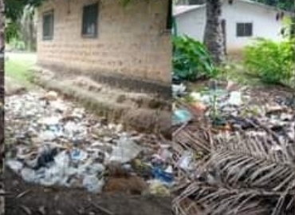
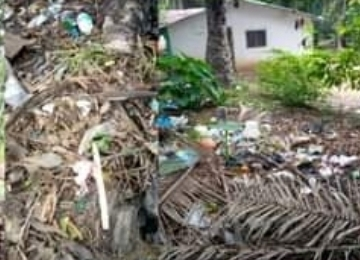
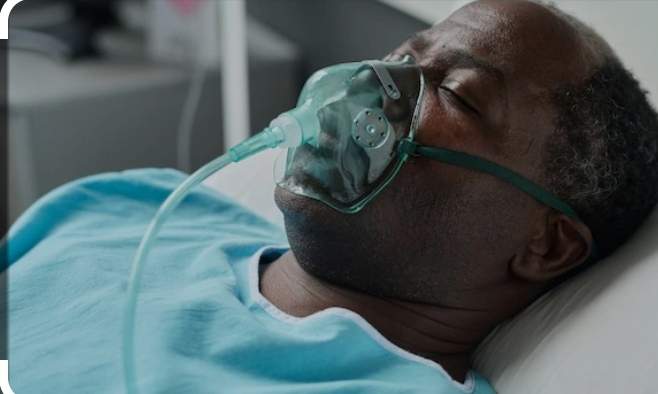
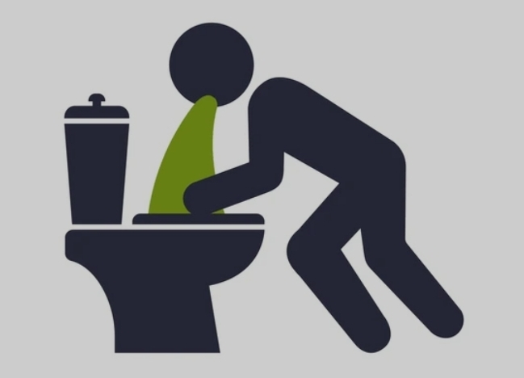
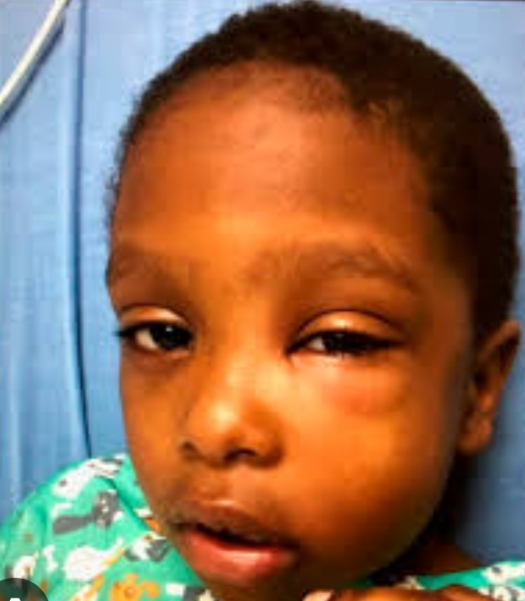
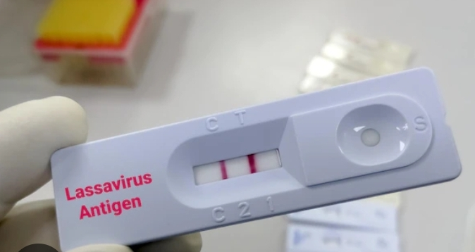

Lassa Fever.
Phebe Airstrip Community, Suakoko District, Bong County, Republic of Liberia


Description
This work cover all of my research report from zone one (1), zone two (2), Zone #3 and Zone#4 on the topics:lassa fever. looking above is a pictures that shows what is really causing this fever in this part of the Country and if Awareness is not done many lives will be endanger which will actually bad for the citizens that are residing in this part of the country. On July 4,2024. I arrived at the phebe Airstrip Community at 10: 45Am. Upon arrival, I met the town Chief in person of Mr. Abraham Kollie,I did introduce myself and explained the purpose of my visit. Mr. Kollie was happy and he welcomed me and granted me the permission to start my work. He pointed out some area that i should focus which were the above mention zones. he told me that, both zone 1 and 2 are using only one hand pump, and also show me where those people throw their dirt. He also told me that this Fever is causing serious harm for the Children and people of Phebe Airstrip Community and other nearby Town and Villages. During this rese arch I observed some parts of the Phebe Airstrip Community very dirty and nasty, people throwing dirt at the back of their houses, Grass all around their home and some family even used the back of the house for latrine which was actually wrong and unhealthful for Citizens that are residing in that part of the county. I was able to educate few individuals in zone one(1) zone two(2), Zone Three(3) and Zone Four(4) communities including teenagers (11-17) years, early adults (18-30)years and older adults (30-70) years old, consisting of males and females on the this lassa fever and what this fever is capable of doing to the entire Community and other nearby communities if proper care is not taken
Definition of Lassa Fever
Lassa fever is a viral illness spread by a rat found in parts of West Africa. People can get Lassa fever by having contact with infected rats or their saliva, urine or droppings. Lassa fever can spread between people. Most people with Lassa fever have mild symptoms. Lassa fever can be deadly.
Signs and Symptoms
Signs and symptoms About 8 in 10 people who are infected have mild symptoms and are not diagnosed. Mild symptoms include:
- Slight fever
- Feeling tired and weak
- Headache
- Bleeding: In some people, the disease may cause more serious symptoms.

- Difficulty breathing

- Vomiting

- Facial swelling

- Pain in the chest, back, and abdomen Shock
Prevention and control measures for Lassa fever include:
1. Avoiding contactwith rodents: , keeping the home
clean and cover
your food and
drinking water
properly.
2. Practicing good
hygiene: Regular
handwashing with
soap and water,
especially after
handling
potentially
contaminated
materials or
caring for sick
individuals, can
help prevent the
spread of the
virus.
3. Avoiding
consumption of rat:
In areas where
Lassa fever is
endemic, it's
important to
avoid eating rats
or other rodents,
as well as food
contaminated with
their urine or
feces.
4. Early detection
and treatment:
Seeking medical
care promptly if
you experience
symptoms of Lassa
fever can help
prevent severe
illness and
complications.
Treatment usually
involves supportive
care.
5. Safe burial
practices:
Ensuring safe
burial practices
for individuals
who have died
from Lassa fever
is important to
prevent further
transmission of
the virus.
Overall,
community education
, improved
sanitation, and
effective
healthcare
systems are
crucial for the
prevention and
control of Lassa
fever outbreaks.
Lassa Fever Test

Treatment
Treatment:
Ribavirin, an antiviral drug, has been used to successfully treat patients with Lassa fever. It is most effective when given soon after a patient becomes sick. Patients should also receive supportive care, including rest, hydration, and treatment of symptoms.
About the Researcher
Mr. Romeo Nwakibie Marsevah Bayogar is a student of Cuttington university
Majoring in Physician Assistant(P.A) and a Website Developer.
Mr. Romeo Nwakibie Marsevah Bayogar is the current Adminstrative Assistant
@ Cuttington Garden School and a researcher. Mr. Bayogar is also a physics and algebra instructor at Christ Mission School. He's the Founder of KUKATONON Organization around Bong County and also the Founder of Bright Future Organization in Margibi County,Mr. Romeo Nwakibie Marsevah Bayogar is also The Secretary General Of Bong county HAC Breathough Action.